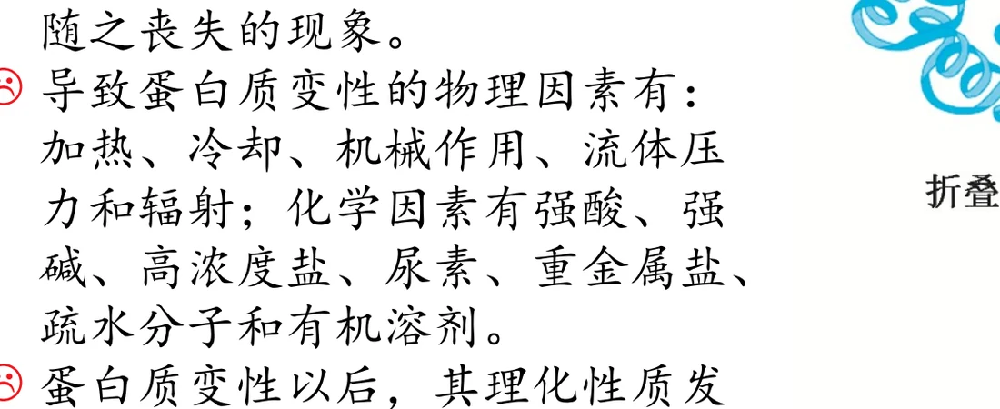
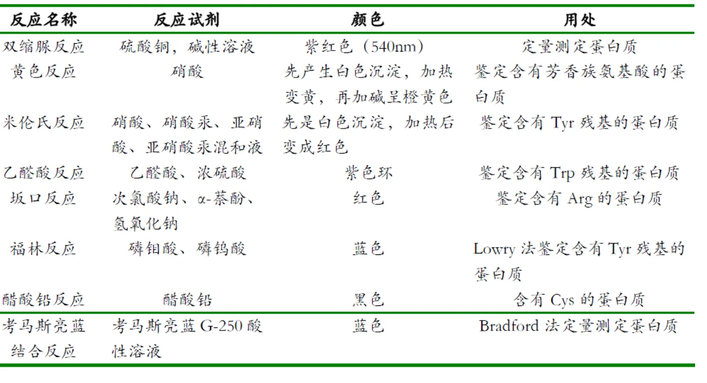
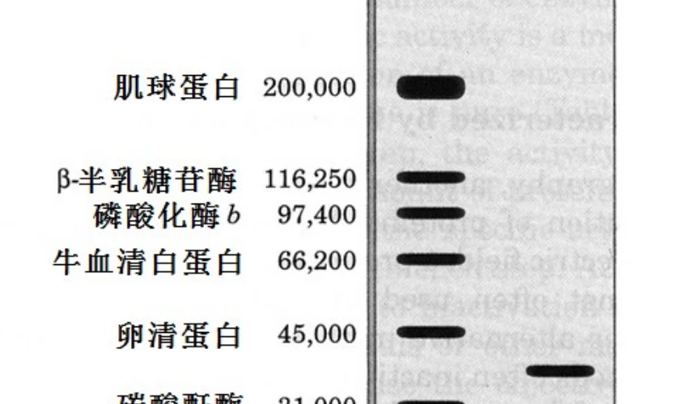
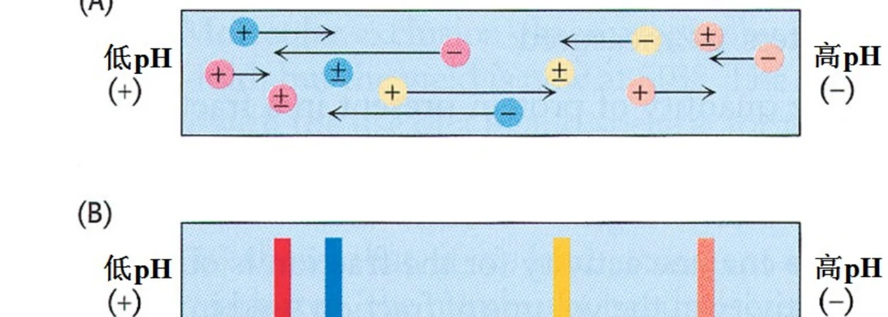
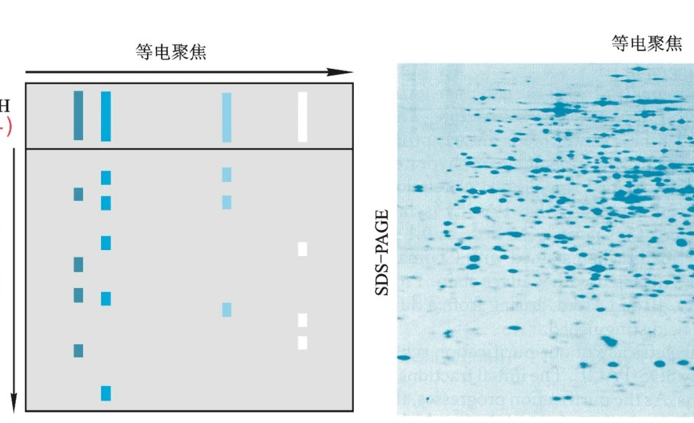

除 Gly 外，构成蛋白质的氨基酸都是 L 型，所以蛋白质整体具有手性并表现出旋光性。旋光度的变化可以直接反映构象是否被破坏。
CHAPTER 05 · PROTEIN PROPERTIES & METHODS
蛋白质的性质及研究方法
前两章讲的是结构怎么形成、功能怎么产生。这一章换成实验视角：怎么把蛋白质拿出来、怎么判断它变了性、怎么测它有多大和带什么电、怎么读出它的一级结构。
理化性质变性本质分离纯化双向电泳序列测定
1. 理化性质的六个抓手
课件把蛋白质的理化性质归纳成六条，每条都对应一种实验手段。理解这一节的关键是：每条性质背后都是某一种具体的分子间作用或基团，不是需要死记的清单。
Phe、Tyr、Trp 三个芳香族氨基酸的侧链苯环使蛋白质在 280 nm 有最大吸收，其中 Trp 贡献最大。这是最简便的定量方法。
可解离基团既来自侧链，也来自肽链两端的 α-氨基与 α-羧基。蛋白质的 pI 不能直接计算，只能实测。
分子大小在 1~100 nm 之间，属于胶体。稳定靠两件事：表面形成水化层，以及表面带同种电荷互相排斥。
破坏水化层或中和表面电荷即可沉淀。盐析、pI 沉淀、有机溶剂沉淀、重金属盐沉淀四条路线的可逆性完全不同。
变性只破坏高级结构，水解则切断肽键。二者常被混为一谈，其实是完全不同的两个层次。
“蛋白质的 pI 不能直接计算”这句话值得单独强调。小分子氨基酸的 pI 只需取夹住净电荷为零物种的两个 pKa 求平均，但蛋白质有几十个可解离侧链，它们的 pKa 会互相影响、随微环境改变，因此没有任何公式能从序列算出 pI。实验上只能用等电聚焦或等电点沉淀来测定。定性趋势倒是可以判断：碱性残基（Lys、Arg、His）多则 pI 偏碱，酸性残基（Asp、Glu）多则 pI 偏酸，两者数量相近时 pI 落在中性偏酸的范围。
一个常被忽略的定量细节
用 A280 定量时，如果样品里混有核酸，读数会偏高。标准做法是同时测 A260 和 A280，用 A260/A280 的比值判断污染程度；纯蛋白质的这个比值通常在 0.5 附近，核酸污染时显著升高。
2. 变性：只拆高级结构，不动肽键
变性（denaturation）的定义是：蛋白质受某些理化因素作用后，高级结构被破坏、生物活性随之丧失的现象。这一概念由我国生化学家吴宪在 1931 年提出，是生物化学史上中国学者最重要的贡献之一。

图源：第5章《蛋白质的性质及研究方法》PPT，第4页。变性把紧密折叠的构象变成松散肽链。
变性的作用因素可以分成两类：
| 类别 | 具体因素 | 作用机制 |
|---|---|---|
| 物理因素 | 加热、冷却、机械作用、流体压力、辐射 | 提供能量，使维持高级结构的非共价键难以维持 |
| 化学因素 | 强酸、强碱、高浓度盐、尿素、重金属盐、疏水分子、有机溶剂 | 改变 pH、竞争氢键、插入疏水核心或与侧链配位 |
变性以后可以观察到五类变化，它们同时也是检测变性的指标：①溶解度降低；②黏度增加；③生物活性丧失（最重要）；④更容易被水解；⑤失去结晶能力。
这里必须把话讲准：变性只破坏维持高级结构的非共价键，肽键和二硫键都还在，所以一级结构不变。这正是变性与水解的本质区别。举个具体对比：加热使酶失活后再降温，有的酶能恢复活性，说明肽键完好；而用蛋白酶处理得到的则是断成小段的肽，无论怎么处理都无法复原。
复性（renaturation）指变性因素去除后恢复构象与活性的现象。大多数蛋白质的变性不可逆，少数可以复性。课件举了一个有趣的例子：用尿素处理熟鸡蛋蛋白后，再用涡流剪切装置处理，可以部分恢复活性（Weiss，2015，被媒体称为“煮熟的鸡蛋变生”）。
主动回忆
判断下面三件事哪一件是变性、哪一件是水解、哪一件两者都不是：①蛋白溶液煮沸后出现沉淀；②用 6 M HCl 长时间处理得到游离氨基酸；③把溶液 pH 调到 pI 后出现沉淀。请给出判断依据。
3. 水解：三种方式，各有损失
蛋白质在强酸、强碱或蛋白酶催化下都能发生水解，但三种方式对氨基酸的破坏程度完全不同，这决定了实验中该选哪一种。
| 方式 | 优点 | 关键损失 | 适用范围 |
|---|---|---|---|
| 酸水解Acid hydrolysis | 彻底、快速、不产生消旋 | Trp 几乎全部被破坏，其次破坏三种羟基氨基酸；Gln 和 Asn 水解为 Glu 和 Asp | 常规氨基酸组成分析（但不报 Trp） |
| 碱水解Alkaline hydrolysis | 不破坏 Trp | 多数氨基酸遭不同程度破坏，并产生消旋（出现 D 型氨基酸） | 测定 Trp 含量 |
| 酶水解Enzymatic hydrolysis | 效率高、不消旋、不破坏任何氨基酸 | 不同蛋白酶对肽键的特异性不同，水解往往不完全 | 肽段制备与测序 |
酶水解的特异性可以直接用来切肽段。作用于肽链内部的称为内切蛋白酶，从两端开始水解的称为外切蛋白酶——氨肽酶作用于 N 端，羧肽酶作用于 C 端。
依赖蛋白酶水解的生理过程至少四个：消化道内消化食物蛋白、被泛素化标记后由蛋白酶体降解、由胱天蛋白酶（caspase）执行细胞凋亡、自噬时在溶酶体内被酸性蛋白酶水解。这四个过程的共同点是“受控的水解”——水解本身不稀奇，什么时候、在哪个部位、对哪个蛋白质水解才是调控的核心。
4. 呈色反应：每一管试剂都在挑一种侧链
呈色反应的原理是肽键或某些氨基酸侧链与特定试剂生成有色产物。它们的价值在于特异性不同：有的只认肽键（受氨基酸组成影响小），有的只认某个特定侧链。下表把课件第 7 页的汇总整理成可查的形式。

图源：第5章《蛋白质的性质及研究方法》PPT，第7页。
| 反应 | 试剂 | 颜色 | 识别对象与用途 |
|---|---|---|---|
| 双缩脲反应Biuret | 硫酸铜＋碱性溶液 | 紫红色（540 nm） | 基于肽键，出现两个以上肽键即显色；受氨基酸组成影响小，适合毫克级定量测定蛋白质 |
| 黄色反应Xanthoproteic | 硝酸 | 先白色沉淀，加热变黄，加碱呈橙黄 | 鉴定含芳香族氨基酸的蛋白质 |
| 米伦氏反应Millon | 硝酸、硝酸汞、亚硝酸 | 先白色沉淀，加热后变红 | 鉴定含 Tyr 残基的蛋白质 |
| 乙醛酸反应Hopkins-Cole | 乙醛酸、浓硫酸 | 紫色环 | 鉴定含 Trp 残基的蛋白质 |
| 坂口反应Sakaguchi | 次氯酸钠、α-萘酚、NaOH | 红色 | 鉴定含 Arg 的蛋白质 |
| 福林-酚反应Folin-Ciocalteu | 磷钼酸、磷钨酸 | 蓝色 | Lowry 法，灵敏度高；但样品与标准蛋白的芳香族氨基酸组成差异大时有系统误差 |
| 醋酸铅反应 | 醋酸铅 | 黑色 | 含 Cys（巯基）的蛋白质 |
| 考马斯亮蓝结合反应Bradford | 考马斯亮蓝 G-250 酸性溶液 | 蓝色 | Bradford 法，快速、操作简单、灵敏度高，是常用定量方法 |
选择定量方法时可以按这个顺序问：样品量有多少（决定灵敏度要求）、样品里芳香族氨基酸的比例是否与标准蛋白接近（决定福林-酚和 A280 是否可靠）、是否希望操作尽量简单（指向 Bradford）。
5. 研究方法总览：围绕一个“蛋白质 X”提问
课件用一个很好的框架把所有技术串起来：假设你发现了一种新的蛋白质 X，需要依次回答七个问题，每个问题对应一类技术。
| 要回答的问题 | 对应技术 | 这一技术的测量原理 |
|---|---|---|
| 如何得到这种蛋白质 | 分离、纯化技术 | 利用溶解性、质量、形状、表面电荷、疏水性、配体结合性质的差异 |
| 它有多大 | SDS-PAGE、质谱 | 去污剂使蛋白带均匀负电，迁移率只反映分子量；质谱测精确质量 |
| 它的 pI 是多少 | 等电聚焦 | 在 pH 梯度中迁移到净电荷为零的位置停止 |
| 其他细胞或生物中是否存在 | Western 印迹、免疫组化 | 用抗体识别特异抗原 |
| 其一级结构如何 | 序列分析 | 直接测序或由基因序列间接推导 |
| 其三维结构如何 | X 射线晶体衍射、NMR、冷冻电镜 | 分别适合晶体、溶液中的小蛋白、难结晶的大复合物 |
| 其功能是什么 | 定点突变、基因敲除与过表达 | 通过扰动建立因果关系 |
破碎细胞→离心去残渣→沉淀／浓缩→层析纯化→鉴定
纯化开始之前必须先解决三个问题，否则后面所有努力都可能白费：纯化的目的是什么（只要活性还是要均一蛋白）、目标蛋白用什么方法测活（没有测活方法就无法判断哪一管有目标蛋白）、用什么原料（表达量高、杂质少的原料能显著降低难度）。纯化效果通常用比活力、纯化倍数和回收率三个指标评价。

图源：第5章《蛋白质的性质及研究方法》PPT，第10页。以已知分子量标准蛋白作对照，可从未知条带的位置读出蛋白质 X 的分子量。
SDS-PAGE 的原理值得说清：SDS 与蛋白质结合后使所有蛋白带上与分子量成正比的均匀负电荷，消除了不同蛋白质之间电荷差异的影响；再加入还原剂打乱二硫键，蛋白质变成伸展的棒状。于是在凝胶中迁移率只由分子量决定，这是它比天然电泳更常用的原因。
6. 等电聚焦与双向电泳：把电荷和大小分两步测
等电聚焦（isoelectric focusing）在凝胶中建立一个稳定的 pH 梯度，蛋白质在其中迁移，直到到达 pH 等于自身 pI 的位置就停止——因为此处净电荷为零，没有电场力驱使它继续移动。结果是每种蛋白质停在对应的 pI 位置，形成一系列清晰条带。

图源：第5章《蛋白质的性质及研究方法》PPT，第11页。蛋白质在 pH 梯度（低 pH 在正极侧）中向自己的 pI 位置汇聚。
把等电聚焦与 SDS-PAGE 正交组合就是双向电泳：第一维按 pI 分离，第二维按分子量分离。一种蛋白质在二维图谱上对应一个点，因此谱图上的点数近似反映样品中蛋白质的种类数。

图源：第5章《蛋白质的性质及研究方法》PPT，第12页。左为原理示意，右为实际凝胶图像。
为什么双向电泳能比较蛋白质组
比较不同条件（如正常与病变组织）的两张二维图谱，同一个蛋白质在两张图上的位置相同，只有强度变化。位置相同这个性质来自 pI 和分子量两个正交维度，比单向电泳的可靠性高得多。唯一的主要限制是极碱、极酸和膜蛋白常常难以进入二维图谱。
7. 一级结构测定：直接法与间接法
测定一级结构有两条路线。间接测定法是先测定该蛋白质基因的核苷酸序列，再根据通用遗传密码表推导出氨基酸序列。它更快，但无法反映翻译后修饰和剪接，因此不能完全取代直接测定。直接测定法（化学测定法与质谱）的步骤如下。
| 步骤 | 做法 | 要点 |
|---|---|---|
| 1 测定 N 端与 C 端 | N 端用 Sanger 试剂或丹磺酰氯；C 端用羧肽酶 | 确定肽链数目与端点 |
| 2 拆分亚基、断裂二硫键 | 氧化法或还原加烷基化 | 二硫键不拆分则肽段无法完全分离 |
| 3 切成肽段 | 用特异性酶或化学试剂 | 胰蛋白酶切 Lys/Arg 的 C 端；糜蛋白酶切芳香族氨基酸的 C 端；CNBr 切 Met 之后；羟胺在 pH 9 时切 Asn-Gly |
| 4 分离并测各肽段序列 | Edman 降解或质谱测序 | Edman 从 N 端逐个释放氨基酸，已可自动化；质谱更灵敏更快 |
| 5 拼接 | 按肽段之间的重叠部分排序 | 用不同的切割方式产生两套片段，靠重叠区定位 |
第 3 步的试剂特异性是这一节最需要记住的细节，因为它们决定了肽段在哪里断开。第 5 步的“重叠拼接”是直接测序法的核心思路：单一酶切的片段无法排序，必须用另一种切割方式产生第二套片段，两套片段的重叠区才能把顺序锁定。质谱测序的原理则不同，它不依赖逐级化学降解，而是通过碎片离子的质量差读出序列。
章节回忆链
给定一种新蛋白质，请完整走一遍：①用什么操作把它从细胞里拿出来并判断每步是否富集；②怎么知道它有多大；③怎么测它的 pI；④怎么判断另一个组织里有没有它；⑤怎么读出它的一级结构。每个问题都要说出测的是什么物理量。
8. 蛋白质的分类（自学）
课件把分类列为自学内容，这里按溶解性整理成表，便于和后面的分离方法对应——因为分离方法的选择往往就是按溶解性差异来的。
| 类别 | 溶解性 | 典型实例与特点 |
|---|---|---|
| 清蛋白Albumin | 溶于水和盐溶液，可被饱和硫酸铵沉淀 | 血清清蛋白、卵清蛋白 |
| 球蛋白Globulin | 不溶于水，溶于稀盐、稀酸、稀碱，可被半饱和硫酸铵沉淀 | 免疫球蛋白、许多酶 |
| 组蛋白Histone | 溶于水或稀酸 | 富含 Arg 和 Lys，呈碱性，是古菌和真核生物的染色体结构蛋白 |
| 精蛋白Protamine | 溶于水或稀酸 | 呈碱性，缺 Trp 和 Tyr，存在于成熟精子中 |
| 醇溶蛋白Prolamine | 溶于 70%~80% 乙醇，不溶于水、无水乙醇和盐溶液 | 禾本科种子中的玉米醇溶蛋白 |
| 谷蛋白Glutelin | 不溶于水和稀盐，溶于稀酸或稀碱 | 植物种子中的储藏蛋白 |
| 硬蛋白Scleroprotein | 不溶于水、盐溶液和稀酸稀碱 | 结缔组织成分，如角蛋白、胶原蛋白、弹性蛋白 |
按化学组成可分为简单蛋白和结合蛋白，后者包括糖蛋白、脂蛋白、核蛋白、色蛋白、金属蛋白、磷蛋白、黄素蛋白等；按分子形状可分为球状、纤维状和膜蛋白；按功能可分为催化、调节、运输、贮存、运动、结构、接头、保护和防御、毒蛋白、奇异蛋白和兼职蛋白等。
拓展：嗜热与嗜冷蛋白的策略
嗜热蛋白靠提高寡聚化水平、更紧密的疏水核心、更多的二硫键和盐桥、更多的表面电荷（Asn/Gln 换成 Asp/Glu）以及更少的环来抵抗高温；嗜冷蛋白则通过增加 Gly、减少 Pro 和盐桥来提高柔性。深海嗜压生物靠积累 TMAO 等相容性溶质抵抗高压变性。规律是一致的：稳定性与柔性的取舍决定了蛋白质适合什么样的环境。
课件还将多肽的固相合成列为自学内容。1959 年 Merrifield 在 Rockefeller 大学建立了这一方法：肽链始终连接在不溶的树脂上，从 C 端向 N 端延伸，每一步用过量试剂推动反应，未反应的试剂和副产物通过洗涤除去，最后把肽从树脂上切下来。它的意义在于把“纯化”变成“洗涤”，从而实现了自动化。